windows server 2016下搭建IIS+PHP+MySQL
在安装IIS时在默认选项中额外勾选CGI
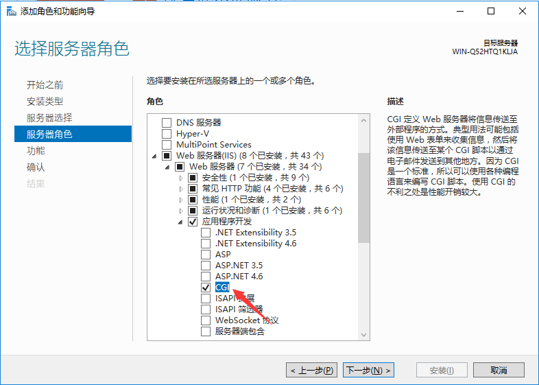
下载NTS版本的PHP，注意是否有相应的VC运行库
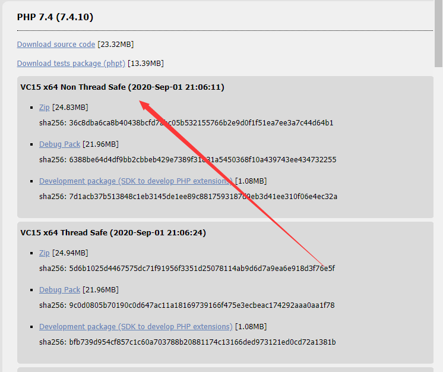
对PHP环境进行配置（修改PHP.ini）
1.解压文件，将php文件夹中的php.ini-development文件进行备份（修改文件前备份是个好习惯）
2.记事本打开php.ini-development文件，修改为对应时区，date.timezone =”Asia/Shanghai”，注意去掉前面的分号“;”。
3.激活你想要的扩展选项，即将相应dll语句前的分号“;”删除；由于是PHP+MySQL环境，推荐激活 gd2、mbstring、mysqli、pdo_mysql
4.保存为php.ini
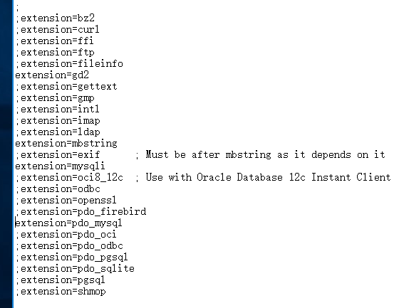
IIS配置PHP
打开IIS管理器，选择处理程序映射（Handler Mappings）
选择右边的添加模块映射
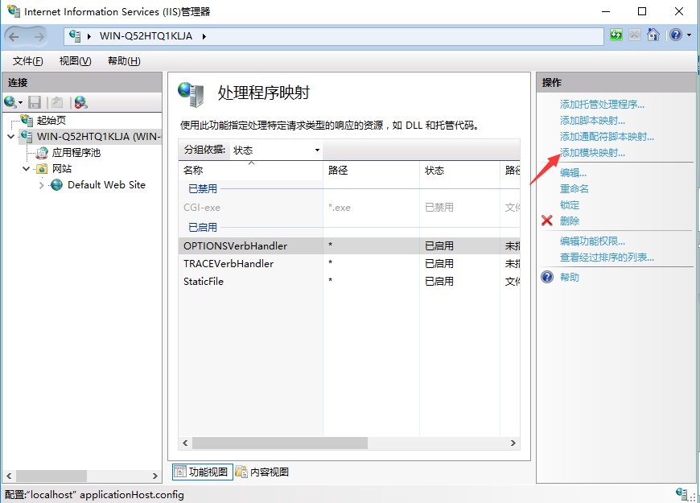
填写对应选项
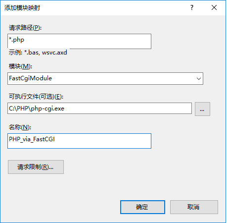
验证
在网站目录下添加index.php文件，在文件中写入。
在默认文档下添加index.php
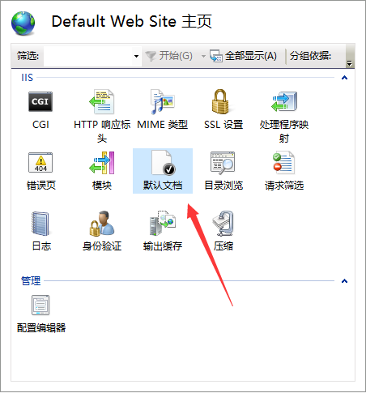
访问localhost
下载安装Windows版MySQL
关于此项请移步https://blog.csdn.net/u014416239/article/details/52446608
或者百度搜索 Windows下安装MySQL
基于PHP的CMS部署
将CMS解压（以解压到C盘根目录为例）
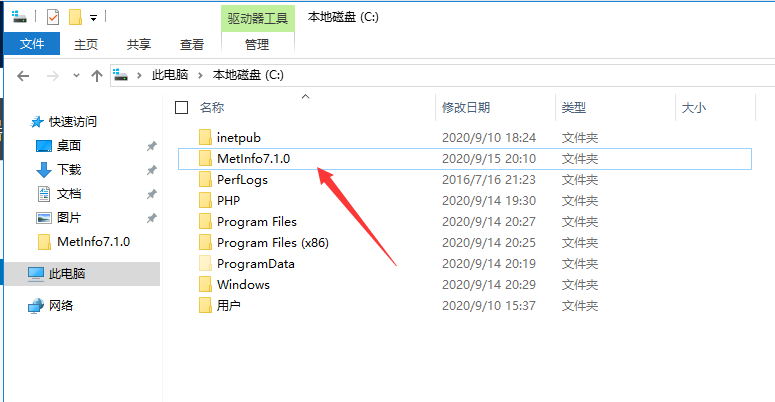
给文件夹设置权限，方便起见，这里添加Everyone用户并赋予完全控制 权限（其实应该是给IUSR 用户赋予相关权限）
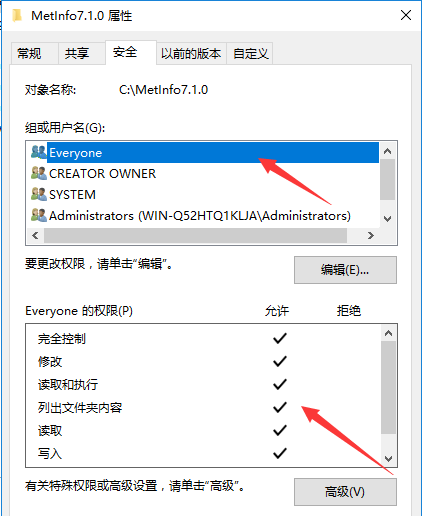
在IIS管理器中添加网站，填入相关内容
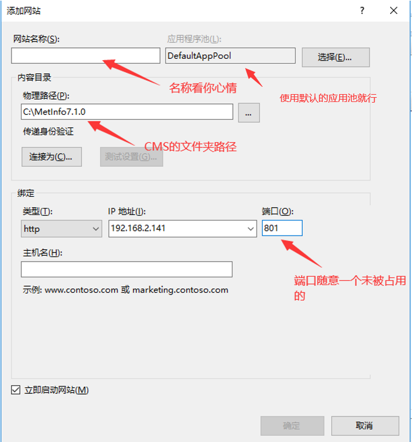
有闲心的话可以在默认文档中添加index.php作为默认首页
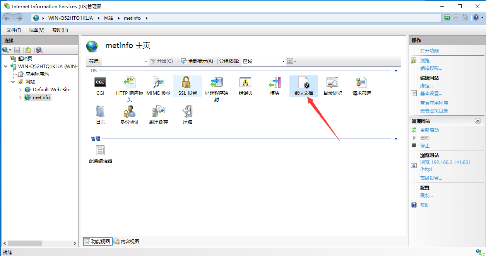
打开127.0.0.1:[设置的端口] 访问网站,根据CMS的引导完成CMS的部署
最终结果
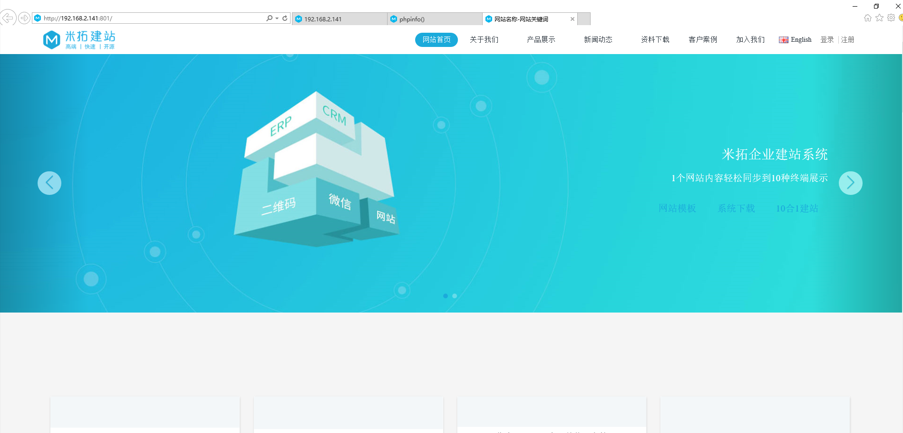